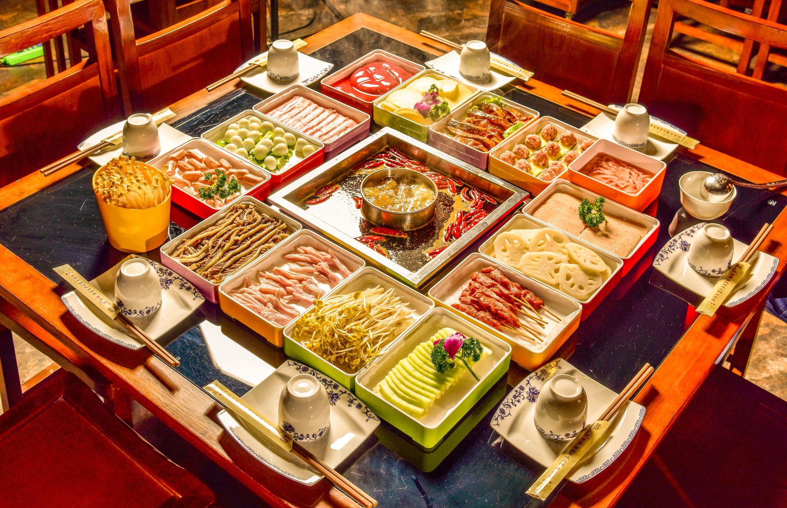
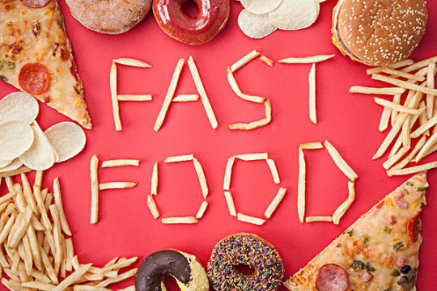
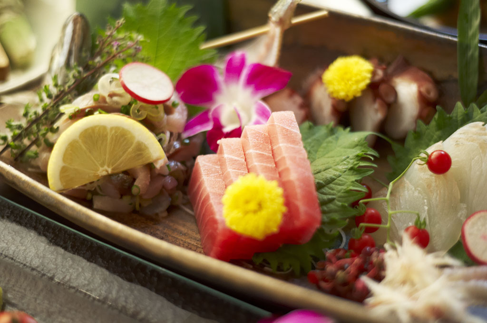

返回

火锅
我们利用爬取到的信息对商家进行分类，发现所有美食中火锅店的数量最多，高达800多家，是当之无愧的人气美食冠军。
小吃快餐
小吃快餐种类多样，传统小吃，奶茶和西方快餐都计入该分类中，总和达到600多家，位于人气美食排行榜的第二位。


日韩料理
随着人们消费的升级，饮食的多样化，武汉日韩料理店铺的数量也达到600多家，位于排行榜中的三位。
本站内容来自互联网，如有侵权请联系站长删除！